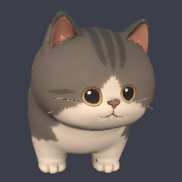
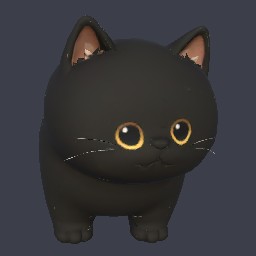
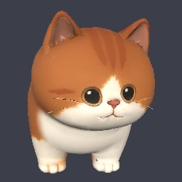
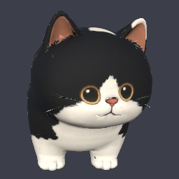
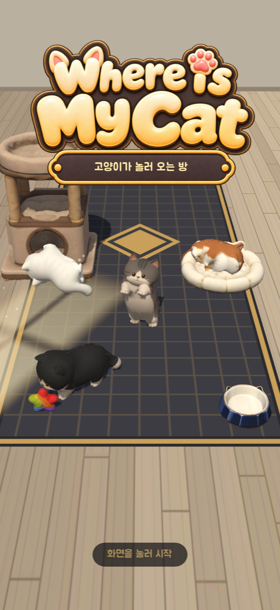
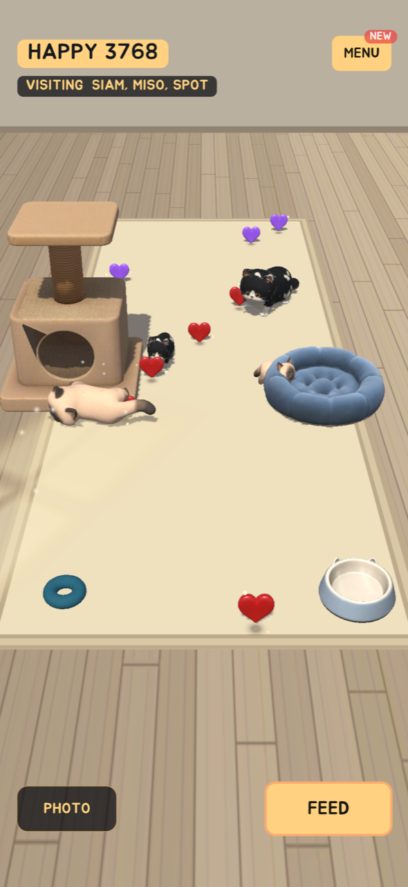
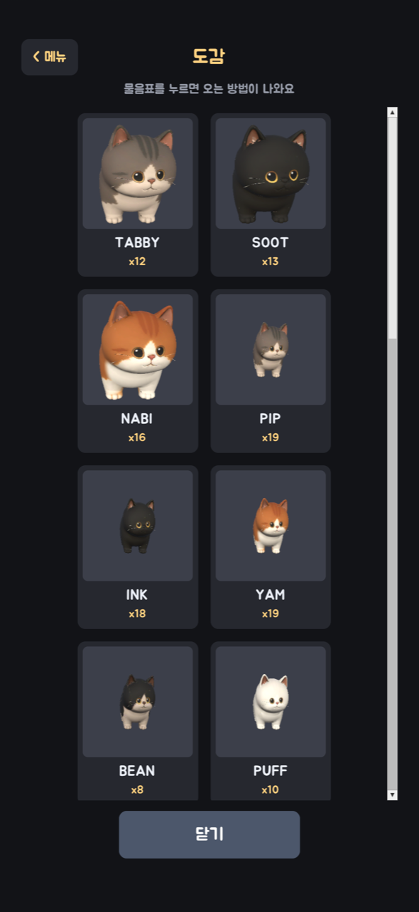
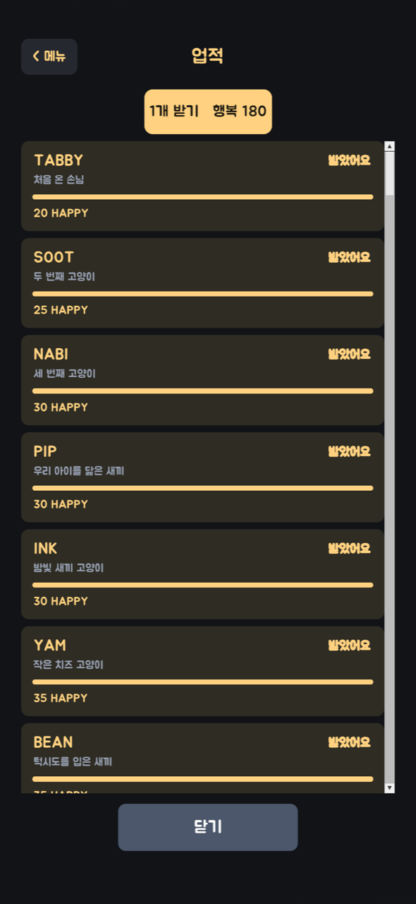

소개
작은 방에서 만나는 고양이들
고양이 어디갔냥?은 내 고양이의 작은 방과, 그 방을 찾아오는 고양이들의 이야기예요. 사료와 가구를 놓아두고 어떤 친구들이 다녀갔는지 확인해 보세요. 방 안에서 한가하게 노는 고양이들을 바라보며 힐링하는 것은 덤이에요.
앱을 꺼 둬도 고양이의 방문은 계속돼요. 잠깐 들러 누가 왔는지 보고, 사료를 채우고, 다시 일상으로 돌아가세요. 한국어·영어·일본어를 지원합니다.

고양이들
우리 방에 놀러 오는 친구들
- TABBY

SOOT
NABI
OREO
할 수 있는 일
고양이와 함께 하는 것들
- 방에 떨어지는 하트를 모아 가구와 사료 사기
- 레이저로 놀아 주고 쓰다듬기
- 함께 사진을 찍어 앨범 만들기
- 새 친구를 만나 도감과 업적 채우기
게임 화면
게임 속 작은 방




다운로드
지금 플레이하기
토스 버전은 설치 없이 토스 앱 안에서 바로 플레이할 수 있어요. 「토스에서 열기」는 토스 앱이 설치된 휴대폰에서 눌러 주세요.
로그인과 내 정보
Android는 Google, iOS는 Apple, 토스는 토스 계정으로 로그인해요. 로그인하면 기기를 바꿔도 방을 이어 갈 수 있어요. Android와 iOS에서는 게스트로도 플레이할 수 있지만, 그때 진행 상황은 그 기기에만 남아요.
정보 수집과 이용에 관한 자세한 내용은 개인정보처리방침에서 확인할 수 있습니다.
링크와 문의
- 개인정보처리방침
- 개인정보처리방침
- 계정 삭제
- 계정 삭제 안내
- 문의
- help@rootwave.co.kr
- 개발
- Root Wave Inc.